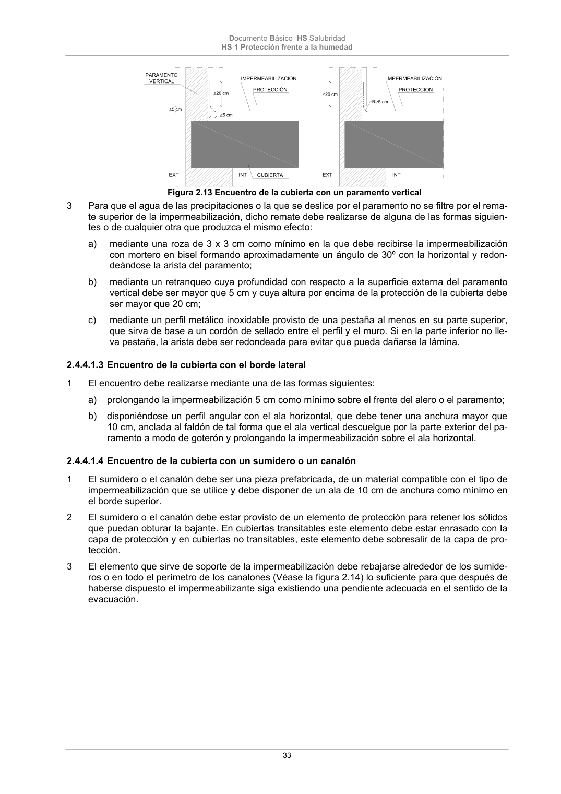

DB-HS · 2.4.4.1.3 Encuentro de la cubierta con el borde lateral · versión 2022-06-14 · capa oficial
Formatos: JSON compacto · Markdown · PDF fuente
Ámbito del documento · texto del ámbito · documento y tablas
ID técnico a0078 · PDF pág. 33 · jerarquía no validada por persona · contrastado con el literal de la página 33 (candidato tipográfico); no validado por persona · padre: a0075
2.4.4.1.3 Encuentro de la cubierta con el borde lateral 1 El encuentro debe realizarse mediante una de las formas siguientes: a) prolongando la impermeabilización 5 cm como mínimo sobre el frente del alero o el paramento; b) disponiéndose un perfil angular con el ala horizontal, que debe tener una anchura mayor que 10 cm, anclada al faldón de tal forma que el ala vertical descuelgue por la parte exterior del pa- ramento a modo de goterón y prolongando la impermeabilización sobre el ala horizontal.

PDF fuente redistribuible: copia fiel enlazada en esta página (SHA256 verificado).